1. Visão Geral dos CNAEs Sujeitos à VISA
Esta seção apresenta uma visão geral sobre a distribuição dos CNAEs sujeitos à fiscalização da VISA.
Tabela de Análise de CNAEs VISA
CNAEs Sujeitos à VISA

Número total de CNAEs = 1384
2. Análise por Nível de Risco e Setor
Detalhes sobre a distribuição de CNAEs e atividades por nível de risco.
CNAEs/Atividades por Nível de Risco

Distribuição de CNAEs/Atividades por Setor de Fiscalização

Tabela de Estabelecimentos por Setor
Apesar da aplicação de várias regras para classificação por setor, para 6% dos estabelecimentos não foi possível determinar um setor específico. Os principais motivos são:
- Estabelecimentos com atividades muito distintas (ex: lanchonete e atividade odontológica) = Setor INDEFINIDO
- Estabelecimentos com multiplos CNAEs de saúde (ex: restrita a consultas, exames complementares, cirúrgicos, hospitalar, pronto-socorro...) = Setor INDEFINIDO
- Estabelecimentos com um único CNAE MULTI RISCO = Setor DESCRIÇÃO DEPENDENTE
3. Número de Estabelecimentos por Grau de Risco em Cada Setor
Visão detalhada da distribuição de estabelecimentos em cada nível de risco para cada setor.
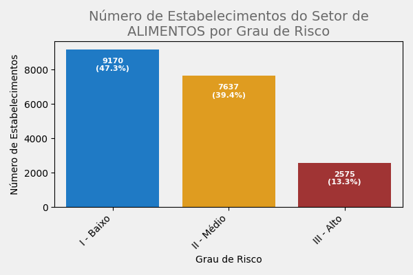
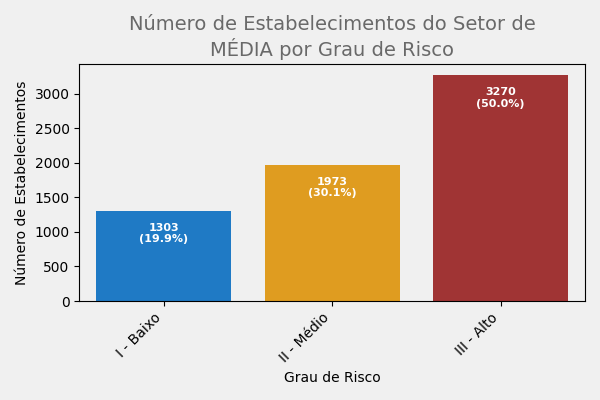
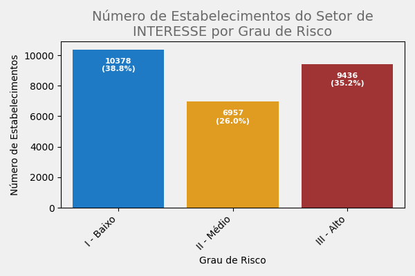
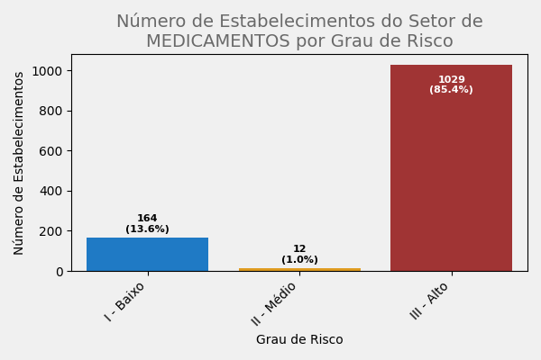

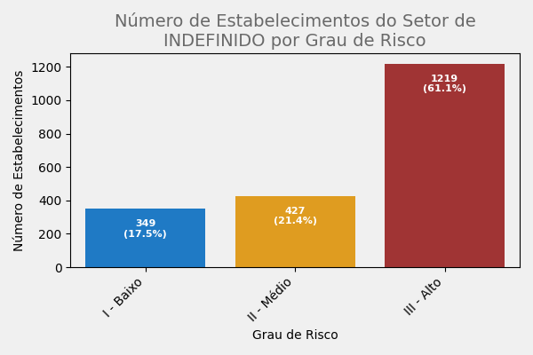
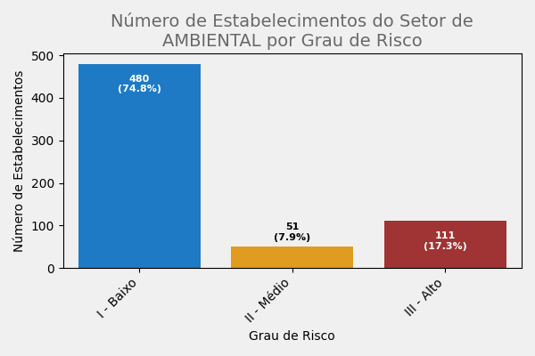
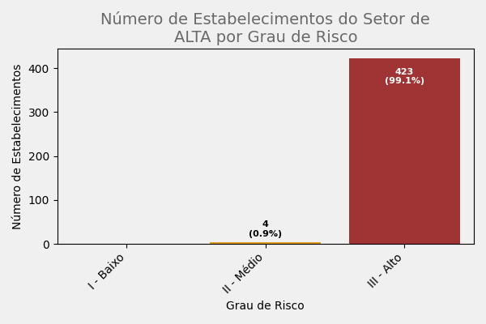
Tabela Consolidada de Risco por Setor
4. Análise Regional
Distribuição de estabelecimentos por setor e risco para cada região.
Tabela de Estabelecimentos por Região: CENTRO
Tabela de Estabelecimentos por Região: SUL DA ILHA
Tabela de Estabelecimentos por Região: CONTINENTE
Tabela de Estabelecimentos por Região: NORTE DA ILHA
Tabela de Estabelecimentos por Região: LESTE DA ILHA
5. Top 5 CNAEs (Principal e Secundário) por Setor
Identificação dos CNAEs mais frequentes por setor, com contagem e tipo.
Tabela Consolidada de Top CNAEs: ALIMENTOS
Tabela Consolidada de Top CNAEs: MÉDIA
Tabela Consolidada de Top CNAEs: INTERESSE
Tabela Consolidada de Top CNAEs: MEDICAMENTOS
Tabela Consolidada de Top CNAEs: DESCRIÇÃO DEPENDENTE
Tabela Consolidada de Top CNAEs: INDEFINIDO
Tabela Consolidada de Top CNAEs: AMBIENTAL
Tabela Consolidada de Top CNAEs: ALTA
6. Crescimento Populacional vs. Estabelecimentos
Comparativo entre o crescimento populacional de Florianópolis e o número de estabelecimentos.
Crescimento Populacional de Florianópolis (1970-2022)
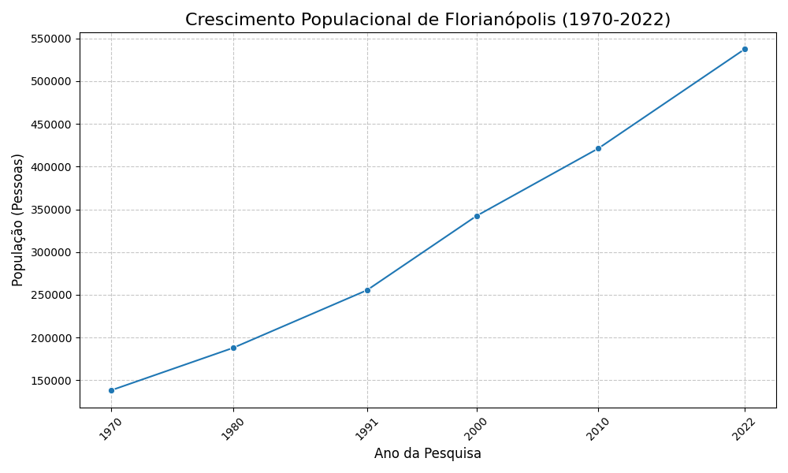
Crescimento Acumulado do Número de Estabelecimentos por Ano
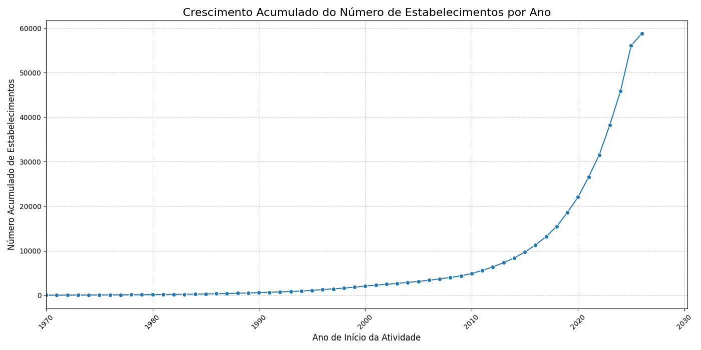
7. Diagramas Setoriais de Risco por Região
Visualizações da distribuição de risco por região dentro de cada setor.
Diagrama para Setor INTERESSE
Diagrama para Setor MÉDIA
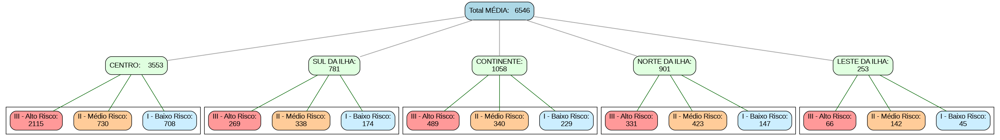
Diagrama para Setor ALIMENTOS
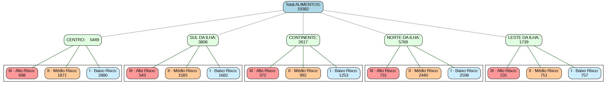
Diagrama para Setor MEDICAMENTOS
Diagrama para Setor DESCRIÇÃO DEPENDENTE

Diagrama para Setor INDEFINIDO
Diagrama para Setor AMBIENTAL
Diagrama para Setor ALTA
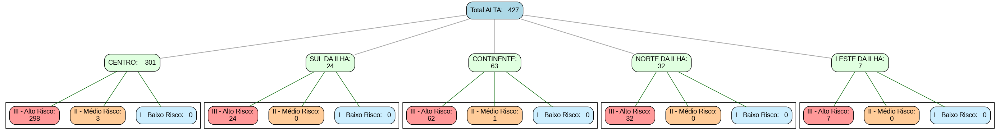
8. Download de Arquivos
Aqui você pode baixar os arquivos .XLSX contendo os dados detalhados por setor e região.
- Estabelecimentos do Setor ALIMENTOS (XLSX)
- Estabelecimentos do Setor MÉDIA (XLSX)
- Estabelecimentos do Setor INTERESSE (XLSX)
- Estabelecimentos do Setor MEDICAMENTOS (XLSX)
- Estabelecimentos do Setor DESCRIÇÃO DEPENDENTE (XLSX)
- Estabelecimentos do Setor INDEFINIDO (XLSX)
- Estabelecimentos do Setor AMBIENTAL (XLSX)
- Estabelecimentos do Setor ALTA (XLSX)
- Estabelecimentos da Região CENTRO (XLSX)
- Estabelecimentos da Região SUL DA ILHA (XLSX)
- Estabelecimentos da Região CONTINENTE (XLSX)
- Estabelecimentos da Região NORTE DA ILHA (XLSX)
- Estabelecimentos da Região LESTE DA ILHA (XLSX)
9. Observações
Para uma análise mais fidedigna, alguns aspectos limitantes não podem deixar de ser considerados:
- CNPJs com CNAEs "pró-forma", cuja atividade não é efetivamente desenvolvida.
- CNPJs que desenvolvem atividade em estabelecimentos de terceiros.
- CNAEs com "subtipos" (múltiplas descrições de atividade de VISA), extrapolando a descrição do IBGE.
- Ausência de estabelecimentos de profissionais liberais - CPFs.